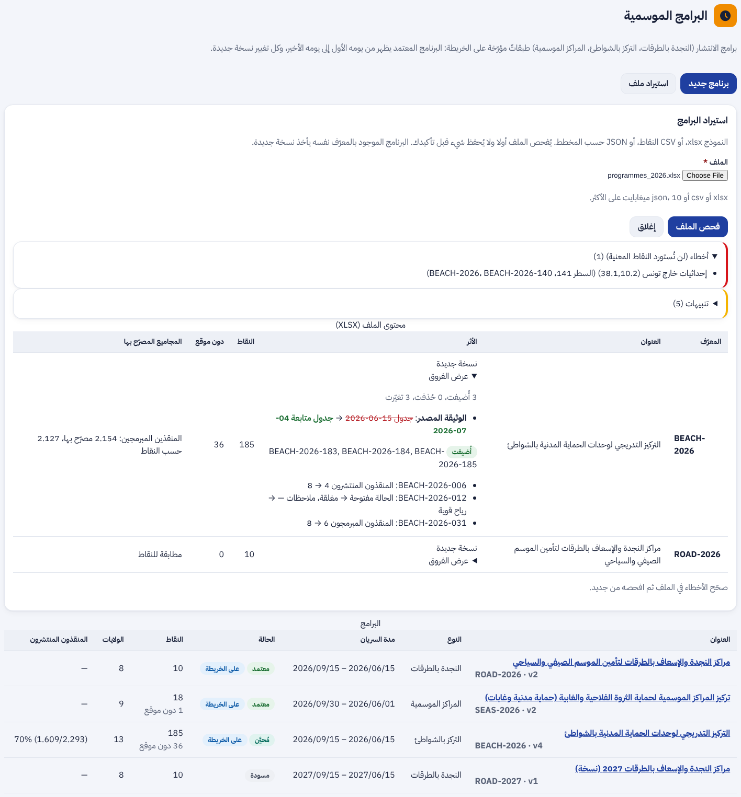
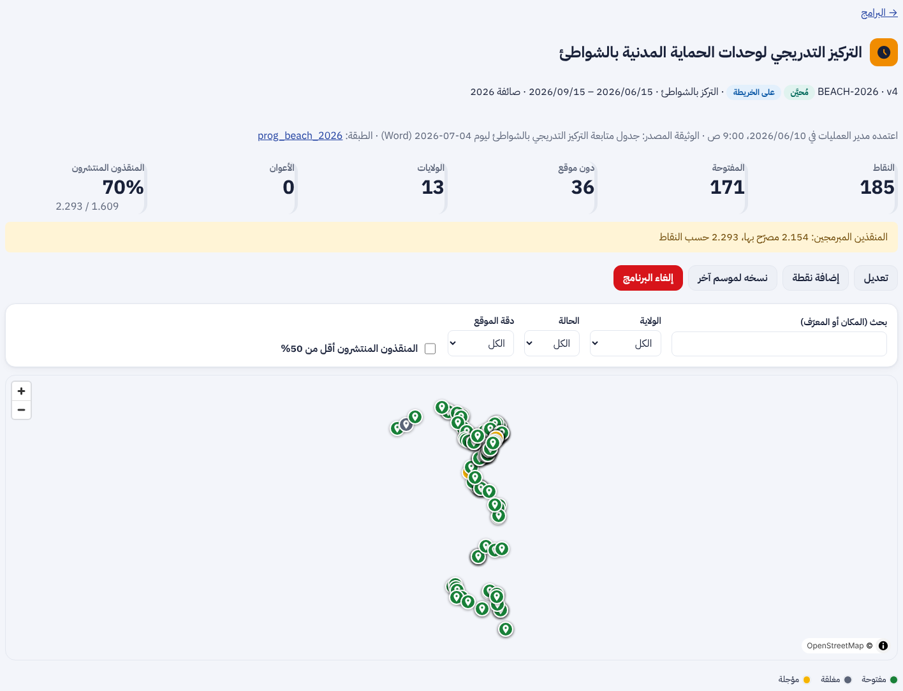
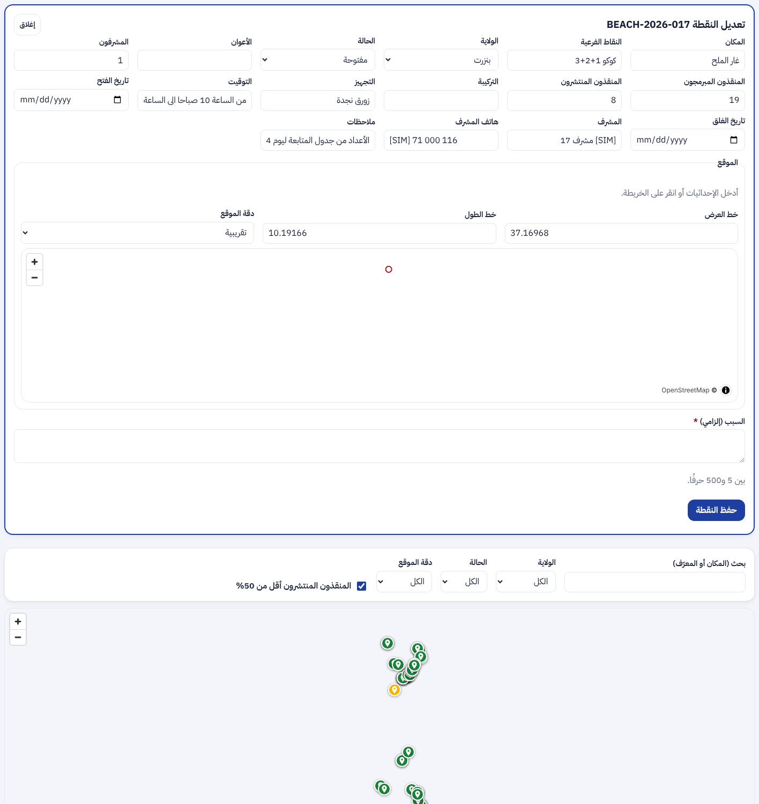
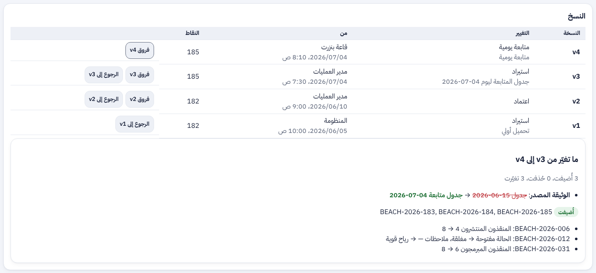
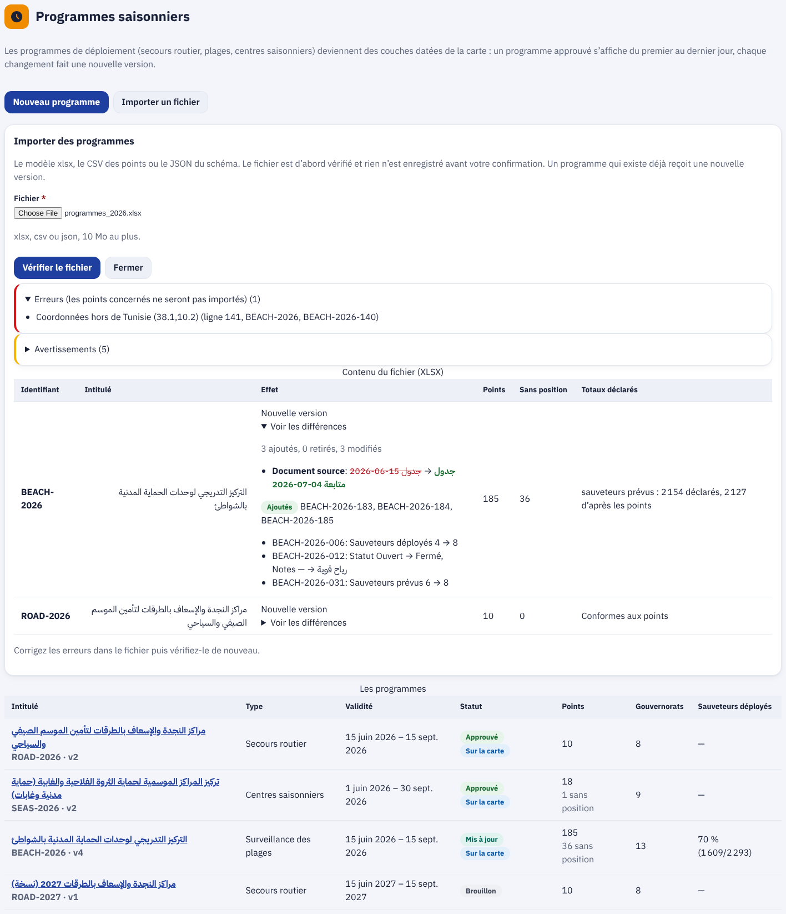
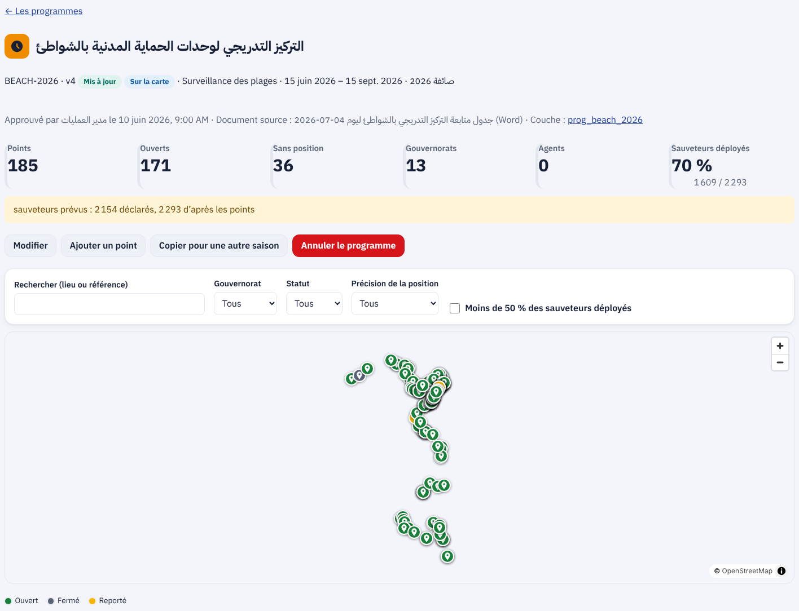

ء-حماية e-Himaya
تقرير المرحلة L2: البرامج الموسمية طبقاتٍ مؤرّخة بنسخ (البند 12)، وحماية الدخول بكلمة السر بعد 3 محاولات فاشلة (البند 8)
1. أين تقع هذه المرحلة من مسار المشروع
التبليغ
←
المعالجة
←
التحليل
←
مؤشرات الأداء KPI
←
التنبؤ بالذكاء الاصطناعي
←
اتخاذ القرار
- المعالجة: ترى القاعة على الخريطة نقاط النجدة على الطرقات ونقاط الحراسة بالشواطئ المفتوحة اليوم، فتعرف أقرب نقطة إلى الحادث.
- التحليل والمؤشرات: لكل برنامج عدد النقاط المفتوحة والولايات والأعوان، ونسبة المنقذين المنتشرين إلى المبرمجين، والنقاط التي تقلّ فيها التغطية عن 50%.
- اتخاذ القرار: يعتمد مدير العمليات البرنامج فيظهر بين تاريخيه فقط، ويُعدّ الشاطئ «محروسا» في مؤشر خطر الغرق (L1b) متى كانت قربه نقطة مفتوحة.
- الأمن: الدخول بكلمة السر صار أصعب على التخمين الآلي دون أن يُسأل الشخص شيئا.
2. مراجعة ← تصميم ← تطوير
الطلب: البند 12 (البرامج الموسمية: برنامج المراقبة على الطرقات والتركيز التدريجي بالشواطئ) والبند 8 (رمز تحقق بعد 3 محاولات فاشلة، و8 أحرف على الأقل)، مع إبقاء تعديل الطبقات وحذفها. التصميم في
design-l2.md.
المعطيات الشخصية: أسماء المشرفين وهواتفهم حُذفت من ملفات المستودع؛ تُدخلها القاعات من اللوحة ولا يراها إلا قاعات العمليات. محوها من تاريخ git وافق عليه يامن، ويُنفَّذ بعد دمج #110.
- البرنامج: رمز (مثل
BEACH-2026)، نوع، عنوان، موسم، تاريخا البداية والنهاية، الوثيقة المصدر، والمجاميع المصرّح بها. دورة الحياة: مسودة ← معتمد ← محيَّن ← منتهٍ، أو ملغى بسبب.
- الطبقة: لكل برنامج معتمد طبقة L1a تُنشر وتوقف آليا بين تاريخيه، فيبقى تعديلها وحذفها من صفحة «الطبقات» كأي طبقة.
- الاستيراد: النموذج xlsx أو CSV أو JSON. قبل الحفظ تُعرض الأخطاء بالسطر، والتحذيرات، والفروق بين المجاميع المصرّح بها والمحسوبة (مثلا 2154 مقابل 2293 منقذا)، وما تغيّر عن النسخة السابقة؛ ثم يُطبَّق بسبب.
- النقاط: التصفية بالولاية والحالة ودقة الموقع والتغطية، الخريطة الملوّنة بالحالة، الإضافة والتعديل والحذف، والموقع بالإحداثيات أو بنقرة على الخريطة.
- المتابعة اليومية: قاعة العمليات الجهوية تحيّن حالة نقاط ولايتها والمنقذين المنتشرين وملاحظة؛ كل حفظ نسخة.
- النسخ: لكل نسخة صاحبها وسببها، وعرض الفروق، والاسترجاع بسبب؛ و«نسخه لموسم آخر» يبدأ مسودة جديدة.
- حماية الدخول: من المحاولة الفاشلة الثالثة لاسم المستخدم يطلب Keycloak إثبات عمل (SHA-256 بـ 18 بتا) يحلّه المتصفح وحده في أقل من ثانية، قبل فحص كلمة السر. يُطبَّق على الاسم ولو لم يكن له حساب، فلا يكشف وجود الحسابات. القفل المؤقت بعد 10 محاولات، و8 أحرف على الأقل.
3. لقطات
قائمة البرامج في لوحة القيادة بالعربية، ثم صفحة برنامج «التركيز التدريجي بالشواطئ» بالمؤشرات وتنبيه فرق المجاميع والخريطة:


تعديل نقطة: الحقول، الموقع على الخريطة، والسبب الإلزامي؛ ثم النسخ بفروقها والاسترجاع:


الصفحتان بالفرنسية:


صفحة الدخول بعد المحاولة الفاشلة الثالثة: حلّ المتصفح المسألة وظهر «تمّ التحقق»، دون أن يُطلب من الشخص شيء:
4. التقدم لكل جزء
| البند | الحالة | التقدم |
|---|
| F-DSH-55 قائمة البرامج والاستيراد بالمعاينة | منجز (L2) |
|
| F-DSH-56 صفحة البرنامج والنقاط والنسخ | منجز (L2) |
|
| F-DSH-57 المتابعة اليومية للقاعة الجهوية | منجز (L2) |
|
| F-SRV-16 البرامج طبقاتٍ مؤرّخة وصلة الشاطئ المحروس | منجز (L2) |
|
| F-SRV-17 حماية الدخول بعد 3 محاولات | منجز (L2) |
|
| قراءة وثائق Word مباشرة | مؤجل (R1) |
|
| إشعار المواطن بنقطة جديدة | L3 (R2) |
|
تقدم L2: 100%. مراحل الخريطة والقرار (L1a إلى L5): المرحلة الثالثة من ست.
5. المحاكاة [SIM]
- [SIM] اللقطات مأخوذة بواجهة برمجية محاكاة من ملف برامج 2026؛ أسماء المشرفين وهواتفهم فيها مختلَقة ومعلَّمة [SIM].
- خلفية الخريطة لا تظهر في بيئة اللقطات (دون إنترنت)؛ تظهر النقاط وحدها.
- برامج 2026 حقيقية من وثائق الديوان، والمواقع دون إحداثيات (36 نقطة) تنتظر التأكيد (PRG-01).
6. الاختبارات المطبقة
| المكوّن | العدد | النتيجة |
|---|
| الخلفية (pytest) | 924، منها test_programmes.py | كلها ناجحة |
| لوحة القيادة (vitest) | 497، منها ProgrammesPage.test.tsx (11) | كلها ناجحة |
| لوحة القيادة (Playwright مع axe) | 42، منها /programmes وصفحة البرنامج | كلها ناجحة |
| مزود Keycloak (JUnit) | 44، منها LoginGuardTest و ProofOfWorkTest | كلها ناجحة |
فحص Keycloak حقيقي (check_login_guard.py) | 19 فحصا على Keycloak 26.8.1 | ناجح |
ruff و mypy و eslint و tsc | — | لا ملاحظة |
- الاستيراد: كل خطأ بسطره (حجم، صيغة، ترميز، ورقة ناقصة، مخطط، عدد النقاط)، فروق المجاميع، والفروق مع النسخة السابقة.
- دورة الحياة: الاعتماد للمسودة فقط، الإلغاء بسبب، النشر والإيقاف بين التاريخين، والانتهاء الآلي.
- الصلاحيات: القاعة الجهوية لولايتها فقط، والمشرف وهاتفه لقاعات العمليات وحدها، لا للمواطن ولا لبقية الأدوار.
- الشاطئ محروس مع نقطة مفتوحة على أقل من 1 كم، ويعود «غير محروس» عند إلغاء البرنامج.
- الدخول: لا مسألة قبل المحاولة الثالثة، كلمة السر الصحيحة دون الحل مرفوضة، الحل مقبول، الاسم دون حساب يُعامَل بالمثل في العالمين، القفل عند 10.
8. المخرجات المحيَّنة
- الملف الوصفي V18 (docx و pdf) في
spec/: F-DSH-55 إلى 57 و F-SRV-16 و 17 منجزة، 394 مسارا و472 عملية، الاختبارات، SEC-01 محيَّن و PRG-01 جديد في سجل القرارات، و L2 في خارطة الطريق.
- مخططات UML في
diagrams/: تسلسل «البرامج الموسمية» (53)، تسلسل «حماية الدخول» (54)، حالات البرنامج (55)، وأصناف البرنامج والنقطة والنسخة، وحالات الاستعمال S27 إلى S29.
- العرض للمسؤولين في
presentation/: 33 مرحلة، الاختبارات، وخارطة الطريق.
- مرجع التصميم مُعاد توليده: design-reference.html.
- سجل الإصدارات، القائمة المؤجلة (§3.2)، ودليلا التنصيب (أمر التحميل وحماية الدخول).
9. ملاحظات وانحرافات
- «رمز التحقق» بُني إثبات عمل يحلّه المتصفح بدل صورة يقرؤها الشخص: لا خدمة خارجية ولا تتبّع، ولا عائق لضعاف البصر، ويُبطئ التخمين الآلي بالقدر نفسه.
- المجاميع المصرّحة في وثائق الديوان تختلف عن مجموع النقاط (2154 مصرّح بها و2293 حسب النقاط): تُعرض ولا تمنع، وتنتظر التأكيد (PRG-01).
- وثائق Word لم تُقرأ مباشرة: حُوّلت برامج 2026 إلى النموذج مرة واحدة، والنموذج هو المعتمد من الموسم القادم.
10. ما يلي
دمج #110، ثم محو أسماء المشرفين وهواتفهم من تاريخ git ورفع L2. بعدها L3 (البند 13)، ثم L4 (نافذة أصحاب القرار والروزنامة) و L5.